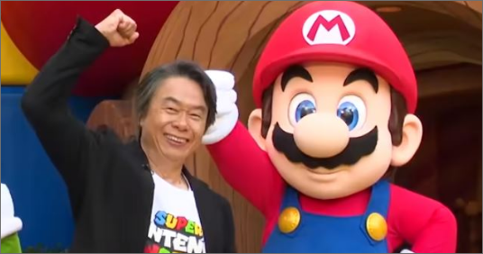
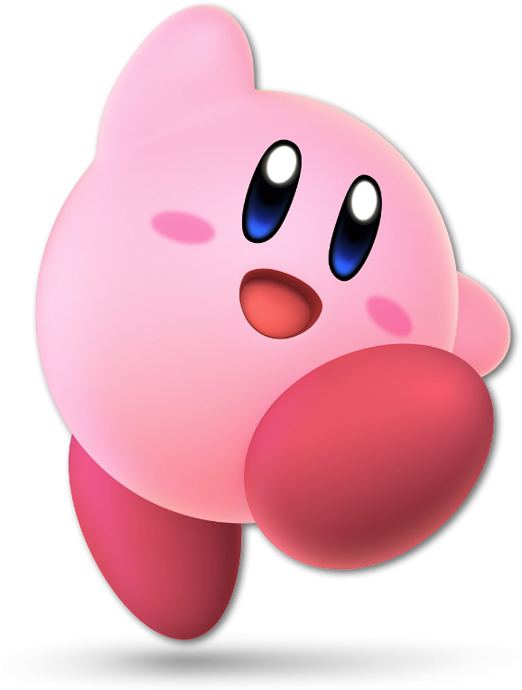
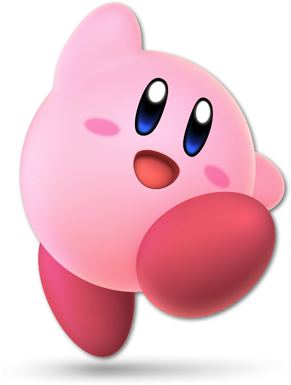

Fundada en el año 1800 en Kyoto, Nintendo empezó vendiendo mazos de cartas tradicionales japonesas, pasó a la fabricación de juguetes hasta que, hoy en día, se ha convertido en una de las compañías más significativas de la industria del videojuego.
El camino definitivo para convertirse en el gigante de los videojuegos que es hoy en día lo tomó hacia finales de los años 70, con un giro hacia la industria de los videojuegos en forma de producción de contenidos para las primeras máquinas arcade.
Debut en la industria de los videojuegos. La primera incursión de la historia de Nintendo en el mundo de los videojuegos fue en 1977. Ese año, la compañía nipona fue el primer importador de la Magnavox Odyssey, la primera consola de la historia y que contenía el famoso Pong.
Si hay un nombre propio que destacar en la historia de Nintendo y los videojuegos es el de Shigeru Miyamoto, creador de la saga Mario. Fue en 1981 cuando al diseñador japonés presentó el juego que revolucionaría las máquinas arcade, Donkey Kong, un juego al que seguro que has jugado en alguna de sus múltiples versiones.

 
